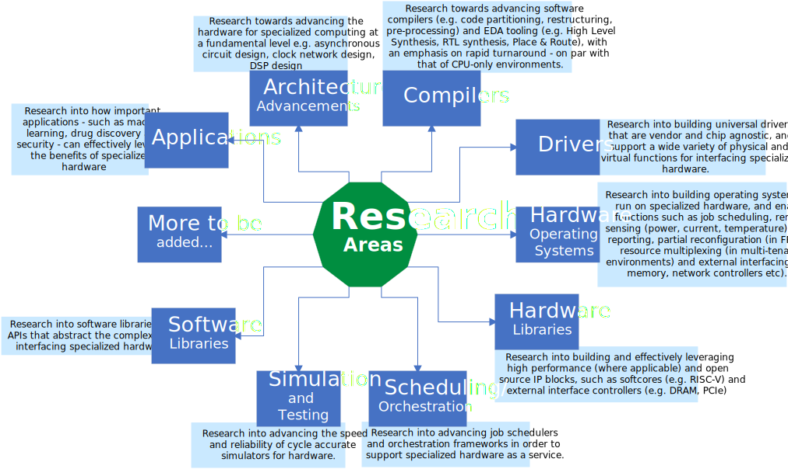
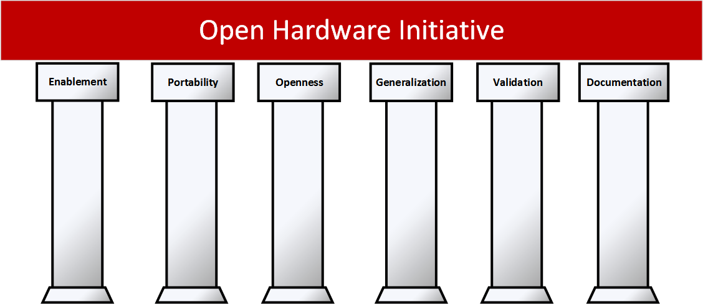

Recently, the computing landscape has undergone a substantial, and somewhat dramatic, change. Organizations have seen their existing (customer facing and internal) applications grow in complexity, while the massive amounts of data being created every day has led to the emergence of new real-time applications in fields such as analytics and Artificial Intelligence (AI). As a result, we now have increasingly strict performance requirements for a large number of our computations. And on top of all that, our power budget has not changed significantly, meaning that we not only have to ensure high utilization of every available compute cycle, but also be power efficient while doing it.
Motivation
The chaging computing landscape...
End of an era...
Visualizing Moore's Law in Action (1971-2019) from Visual Capitalist on Vimeo.
General purpose computers have dominated the traditional computing landscape for decades, providing unrivaled economic benefits and productivity that put them ahead of alternative computational technologies. Their success came on the back of a hardware stack that provided "free" performance growth every generation - through increasing transistor density and operating frequencies - and a software ecosystem that benefited from years of unparalleled innovation in programming languages, compilers, operating systems, drivers, Application Programming Interfaces (APIs) etc.
However, the changing computing landscape is signalling an end to the era of general purpose computing dominance. Why is that?
To meet the stronger performance requirements of a number of existing and future workloads, both CPU software and hardware must keep getting faster every few months. And while the CPU software juggernaut continues to innovate - and has had success in meeting these performance requirements whilst maintaining a high degree of programmability/ease-of-use - the same cannot be said for CPU hardware. With the slow down of Moore's law and end of Dennard's scaling, the "free" performance growth from CPU hardware stack is no longer economically feasible. Transistors do continue to get smaller, but the rate at which they do so is too slow. Moreover, scaling up clocks to scale performance is not possible since power consumption increases with transistor switching frequency.
But what about GPGPUs...
Technically, yes, GPUs are general purpose computers that can be used to offload and accelerate high performance computing workloads. They are capable of throwing thousands of cores at problems, and potentially achieve orders of magnitude better performance than CPUs. However, not all that can be offloaded to a GPU should be offloaded to a GPU.
GPUs achieve massive amounts of data parallelism through a rigid architecture. Cores and memory hierarchies are constrained in the degrees of freedom that they are afforded e.g. inter-block communication, thread divergence. This in turn limits the set of problems that can actually benefit from the offload e.g. dense matrix and tensor operations. Moreover, due to these constraints, the programming model changes as well; we end up sacrificing some of the original (easier to use) programming models in order to get improved performance for a limited set of problems.
Simply put, the GP in GPGPU can mean General Purpose or Good Performance, but not both. As a result, GPUs have limited usefulness for researchers and developers when looking for high performance solutions for their diverse sets of workloads.
Enter, specialized hardware...
To bridge this gap between supply & demand of power and performance, alternative computational technologies have become more practical options. In particular, we have seen specialized hardware accelerators, in the form of FPGAs and ASICs, rapidly gaining traction in both data centers and the edge. So how does specialized hardware boldly go where no CPU/GPGPU has gone before? Concurrency...virtually unlimited concurrency. One of the main problems of GPGPUs and CPUs is that the number of independent tasks each can perform is limited, and the cost of communicating between these limited independent tasks. Specialized hardware, on the other hand, can perform an almost unlimited number of concurrent tasks, on the same or on different data, and have unconstrained connectivity between them. That's the path to accelerating what couldn't be accelerated before. For specialized hardware to deliver on its promise, however, productivity is paramount. Having the capability of high performance does not guarantee the performance will be automatically achieved, similar to how having "free" performance growth for CPUs was insufficient on its own. Without the software juggernaut behind it, CPUs might not have been so widely adopted.

But there is still work to be done...
Unfortunately, the support for enabling specialized hardware has not made significant advancements in the past decades. The world of specialized hardware today is an ad hoc one. Except for some basic tooling for compiling high level representations of hardware to physical circuits, nearly everything has to be built by developers on their own, necessitating substantial expertise in hardware development. This is because readily available tools/components, be they proprietary or open source, lack the functionality, usability, reliability and customizability (in the case of proprietary) that is required for productivity. For example, High Level Synthesis tools can be licensed from vendors to automatically convert C code into custom hardware, but are unable to give acceptable performance out-of-box; quite a bit of hardware-aware and compiler-aware code restructuring/tinkering may be required to get good performance. Another example is synthesis and place & route, where even incremental changes to a design typically require complete hardware regeneration; the large turn-around time caused by this frequent hardware regeneration is incompatible with the developer mindset, and thus makes it hard to gain wide adoption and quick innovation.

The initiative...
Herein lies the motivation for the Open Hardware Initiative. We need to built tooling which can maximize the functionality, programmability and performance of designs that target hardware accelerators. Doing so will allow us to continue to be productive and meet the demands of existing data center and edge applications (as well as enable new ones). There are three high level goals of the Open Hardware Initiative. The first goal is to undertake research towards identifying and prototyping different components of a productive hardware accelerator ecosystem. The second goal, based on this research, is to build a production version of a universal hardware accelerator ecosystem. The final goal is to identify and bring together a community around each part of the ecosystem, so that we keep innovating and advancing the field.
Research Areas

Core Principles

To ensure that projects undertaken under the Open Hardware Initiative contribute in a meaningful way to the state of the field, they are governed by the following six core principles:
1. Enablement: to enable developers across a spectrum to develop their own custom solutions, regardless of prior hardware programming expertise. Simply put, both software and hardware developers should be able to easily leverage and benefit from the work done. This can be done through appropriate abstractions of complexities, prebuilt libraries to serve as building blocks, and advancements made to familiar development environments.
2. Portability: to provide a single compilation flow, including a common development language, so that applications need only be written once, and the code automatically partitioned and executed using available resources on the target machine (resources such as ASICs, FPGAs, GPUs and CPUs).
3. Openness: to make available all hardware and software code, so that the collective expertise of a community can be leveraged - through direct and indirect contributions to the projects themselves, or through independent ( but relevant) open source projects. The amount of work that has to be done is enormous and getting much of the open source community to participate early will be essential.
4. Generalization: to have a vendor and chip agnostic ecosystem, to the greatest extent possible, in order to prevent lock ins, or having to rewrite entire (or large parts of) stacks for each individual target.
5. Validation: to validate all work done, to the greatest extent possible and wherever applicable, through testing done in simulations, emulations and implementations.
6. Documentation: to document all work done, so that it can be easily understood, used and/or modified by the community.